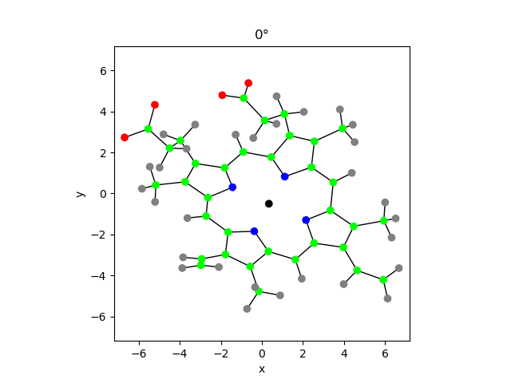
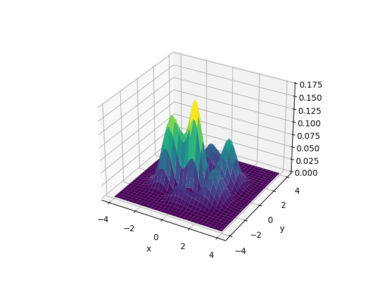
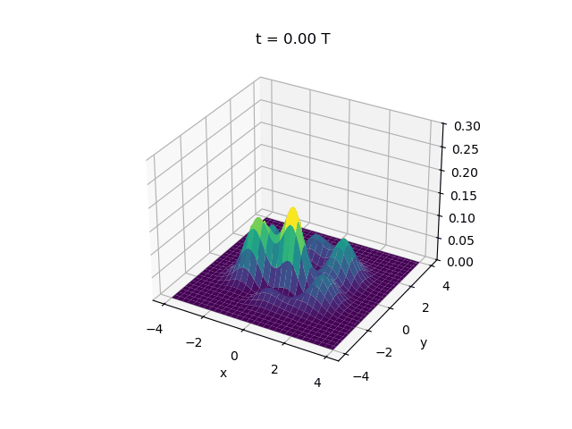

Widgets and animations
J/K or →/← jump between sections
Widgets in Jupyter Lab
ipywidgets and ipykernel 6, both in the environment that runs Jupyter Lab.
-
Stop Jupyter Lab
Ctrl+C in its terminal, then y. Or File → Shut Down in Jupyter Lab.
-
Install
In that terminal (Windows: Anaconda Prompt):
conda activate pytccm conda install -c conda-forge ipywidgets "ipykernel<7" conda list ipykernelThe last command must show a version starting with
6. -
Start Jupyter Lab again
From the same terminal:
jupyter lab -
Check
Run this cell. A slider must appear.
from ipywidgets import IntSlider IntSlider()
If it does not work
The cell prints the text IntSlider(value=0)
Jupyter Lab runs from another environment, for example from Anaconda Navigator. Close it and repeat step 3 after conda activate pytccm.
ModuleNotFoundError: No module named 'ipywidgets'
ipywidgets went into another environment. Repeat step 2: the prompt must start with (pytccm).
Error displaying widget: model not found
A saved notebook was reopened: the kernel that made the widget is gone. Run the cell again.
The slider moves, but the plot stays the same
ipykernel 7.0–7.3 sometimes leaves a slider change unanswered. conda list ipykernel must show 6.x; if not, repeat step 2 and restart Jupyter Lab.
interactive: a function and its sliders
Every slider move calls the function again with the new values. Example: the Morse potential of H₂. Hover a slider.
All imports for today, in one cell:
import numpy as np import matplotlib.pyplot as plt from ipywidgets import interactive, IntSlider, FloatSlider, Dropdown, Play, jslink, HBox from matplotlib.animation import FuncAnimation from IPython.display import HTML, display
def plot_morse(De, a, re):
r = np.linspace(0.3, 4, 200) # Å
plt.plot(r, De * (1 - np.exp(-a * (r - re)))**2)
plt.ylim(0, 8)
plt.xlabel('r / Å')
plt.ylabel('E / eV')
interactive(plot_morse,
De=FloatSlider(value=4.75, min=1, max=6, step=0.05, description='De / eV'),
a=FloatSlider(value=1.94, min=0.5, max=4, step=0.02, description='a / Å⁻¹'),
re=FloatSlider(value=0.74, min=0.5, max=2, step=0.01, description='re / Å'))A molecule to play with
Molecule is plot_molecule as a class. rotated(angle, axis) returns a new Molecule with coordinates coordinates @ R.T:
The whole cell: parse_file, rotation_matrix, Molecule
import copy
COLORS_DICT = {'C': 'lime', 'N': 'blue', 'H': 'grey', 'Fe': 'black', 'O': 'red'}
def parse_file(filename):
raw_data = np.loadtxt(filename, skiprows=2, dtype=str)
elements = raw_data[:,0]
coordinates = raw_data[:,1:].astype(float)
return elements, coordinates
def rotation_matrix(angle_deg, axis):
t = np.radians(angle_deg)
c, s = np.cos(t), np.sin(t)
if axis == 'x':
return np.array([[1, 0, 0],
[0, c, -s],
[0, s, c]])
if axis == 'y':
return np.array([[ c, 0, s],
[ 0, 1, 0],
[-s, 0, c]])
if axis == 'z':
return np.array([[c, -s, 0],
[s, c, 0],
[0, 0, 1]])
raise ValueError(f'Unknown axis {axis}')
class Molecule:
def __init__(self, filename):
self.elements, self.coordinates = parse_file(filename)
self.coordinates = self.coordinates - self.coordinates.mean(axis=0)
self.colors = [COLORS_DICT[element] for element in self.elements]
self.size = np.abs(self.coordinates).max() + 0.5
def rotated(self, angle_deg, axis='z'):
new = copy.copy(self)
new.coordinates = self.coordinates @ rotation_matrix(angle_deg, axis).T
return new
def plot(self, x_axis=0, y_axis=1):
xyz = self.coordinates
plt.scatter(xyz[:,x_axis], xyz[:,y_axis], c=self.colors, zorder=2)
for i, atom1 in enumerate(xyz):
for atom2 in xyz[i+1:]:
if np.linalg.norm(atom1 - atom2) < 1.6:
plt.plot([atom1[x_axis], atom2[x_axis]],
[atom1[y_axis], atom2[y_axis]],
c='black', lw=1, zorder=1)
plt.xlim(-self.size, self.size)
plt.ylim(-self.size, self.size)
plt.gca().set_aspect('equal')
plt.xlabel('xyz'[x_axis])
plt.ylabel('xyz'[y_axis])
heme = Molecule('heme.xyz')
heme.rotated(45, 'x').plot(0, 1)
A slider and a dropdown
interactive with an IntSlider for the angle and a Dropdown for the axis.
angle = IntSlider(value=0, min=0, max=360, step=5, description='Angle')
axis = Dropdown(options=['x', 'y', 'z'], value='x', description='Axis')
def update(angle, axis):
heme.rotated(angle, axis).plot(0, 1)
interactive(update, angle=angle, axis=axis)
A play button
Play counts from min to max, one step every interval ms. jslink copies its value into the slider. Press ▶.
n = IntSlider(value=0, min=0, max=10, description='n')
play = Play(value=0, min=0, max=10, step=1, interval=500)
jslink((play, 'value'), (n, 'value'))
HBox([play, n])▶ plays (and becomes ⏸), ■ stops and goes back to min, ↻ repeats from min after max.
Play the rotation
New sliders, linked to a Play: ▶ turns the molecule. The plot above keeps its own sliders.
angle = IntSlider(value=0, min=0, max=360, step=5, description='Angle') axis = Dropdown(options=['x', 'y', 'z'], value='x', description='Axis') play = Play(value=0, min=0, max=360, step=5, interval=100) jslink((play, 'value'), (angle, 'value')) display(play) interactive(update, angle=angle, axis=axis)
FuncAnimation: frames into a player or a GIF
FuncAnimation calls frame(angle) for every angle and records the figure: 72 frames, 0°, 5°, …, 355° about y. Hover the code.
fig = plt.figure()
def frame(angle):
plt.cla() # clear the previous frame
heme.rotated(angle, 'y').plot(0, 1)
plt.title(f'{angle}°')
anim = FuncAnimation(fig, frame, frames=range(0, 360, 5), interval=50)
anim.save('heme.gif', writer='pillow', fps=20)
html = anim.to_jshtml()
plt.close() # last: frame() draws on the current figure
HTML(html)
| If the cell has | you see |
|---|---|
anim as the last line | <matplotlib.animation.FuncAnimation at 0x…> and one empty figure |
plt.close() before to_jshtml() | a blank player and a stray figure |
plt.show() inside frame | one empty figure per frame |
A particle in a box
Box of length L = 1, ħ = m = 1. Eigenfunctions and energies:
x = np.linspace(0, 1, 200) # box of length L = 1
def psi_n(x, n):
return np.sqrt(2) * np.sin(n * np.pi * x)
def E(n):
return n**2 * np.pi**2 / 2
T = 2 * np.pi / E(1) # after T the density repeats
for n in (1, 2, 3):
plt.plot(x, psi_n(x, n), label=f'$\\psi_{n}$')
plt.legend()
plt.show()
A mix of states changes with time:
After T = 2π/E₁ every phase factor is back to 1, so the density repeats:
Sliders and animation together
density(x, coeffs, t) returns |Ψ(x, t)|² on the grid x for any number of coefficients coeffs = (c1, c2, ...). It integrates to 1:
def density(x, coeffs, t):
psi = sum(c * psi_n(x, n) * np.exp(-1j * E(n) * t)
for n, c in enumerate(coeffs, start=1))
norm = sum(abs(c)**2 for c in coeffs)
return np.abs(psi)**2 / norm
dx = x[1] - x[0]
print(np.sum(density(x, (1, 1, 0), 0.3)) * dx)
1.0
animate_box makes a 60-frame animation of one period T. interactive does not show what the function returns, so it calls display(HTML(html)). With continuous_update=False the animation is rebuilt when a slider is released.
def animate_box(c1, c2, c3):
fig = plt.figure()
def frame(i):
plt.cla()
plt.plot(x, density(x, (c1, c2, c3), i / 60 * T))
plt.ylim(0, 5)
plt.xlabel('x / L')
plt.ylabel('$|\\Psi|^2$')
plt.title(f't = {i / 60:.2f} T')
anim = FuncAnimation(fig, frame, frames=60, interval=50)
html = anim.to_jshtml()
plt.close()
display(HTML(html))
interactive(animate_box,
c1=FloatSlider(value=1, min=0, max=1, step=0.1, continuous_update=False),
c2=FloatSlider(value=1, min=0, max=1, step=0.1, continuous_update=False),
c3=FloatSlider(value=0, min=0, max=1, step=0.1, continuous_update=False))
With one coefficient (for example c₂ = c₃ = 0) the density does not move: a stationary state.
A 2D harmonic oscillator in 3D
ħ = m = ω = 1. 1D eigenfunctions with the Hermite polynomials Hn (scipy.special.eval_hermite):
In 2D: products φnx(x) φny(y), E = nx + ny + 1. A mix of five:
fig.add_subplot(projection='3d') makes 3D axes; plot_surface(X, Y, Z) needs the grids from np.meshgrid.
from scipy.special import eval_hermite
from math import factorial
q = np.linspace(-4, 4, 60)
X, Y = np.meshgrid(q, q)
def phi(n, x): # 1D oscillator, ħ = m = ω = 1
return (eval_hermite(n, x) * np.exp(-x**2 / 2)
/ np.sqrt(2**n * factorial(n) * np.sqrt(np.pi)))
coeffs = {(0, 0): 1, # (nx, ny): c
(1, 1): 1,
(2, 0): 1j,
(0, 3): 1,
(3, 1): 1}
def density_2d(X, Y, coeffs, t):
psi = sum(c * phi(nx, X) * phi(ny, Y) * np.exp(-1j * (nx + ny + 1) * t)
for (nx, ny), c in coeffs.items())
norm = sum(abs(c)**2 for c in coeffs.values())
return np.abs(psi)**2 / norm
ax = plt.figure().add_subplot(projection='3d')
ax.plot_surface(X, Y, density_2d(X, Y, coeffs, 0), cmap='viridis')
ax.set_xlabel('x')
ax.set_ylabel('y')
plt.show()

All energy differences are whole numbers, so the density repeats after T = 2π. Change coeffs for another pattern. ax.cla() clears the 3D axes, so the z limits are set in every frame.
fig = plt.figure()
ax = fig.add_subplot(projection='3d')
def frame(i):
ax.cla()
Z = density_2d(X, Y, coeffs, i / 40 * 2 * np.pi)
ax.plot_surface(X, Y, Z, cmap='viridis')
ax.set_zlim(0, 0.3)
ax.set_xlabel('x')
ax.set_ylabel('y')
ax.set_title(f't = {i / 40:.2f} T')
anim = FuncAnimation(fig, frame, frames=40, interval=50)
html = anim.to_jshtml()
plt.close()
HTML(html)
